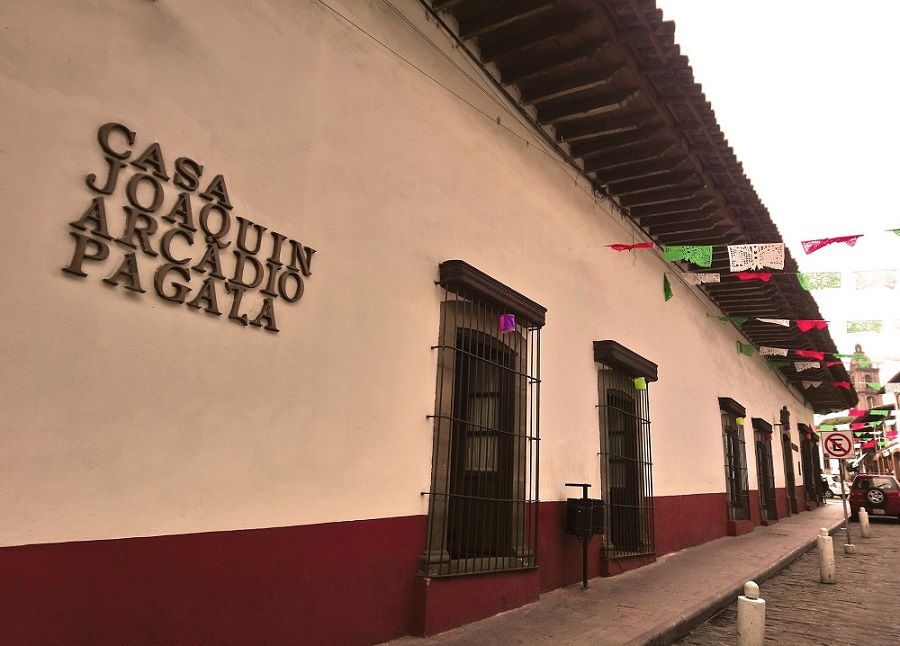

BIBLIOTECA JOAQUIN ARCADIO PAGAZA

La biblioteca está ubicada en Avenida Joaquín Arcadio Pagaza No. 201, esquina De la Cruz, Valle de Bravo Forma parte del Centro Cultural Joaquín Arcadio Pagaza, un inmueble histórico del siglo XVIII donde vivió el poeta y obispo Joaquín Arcadio Pagaza
IGLESIA "LA CAPILLA"

Fiesta del 12 de diciembre: Es el evento más importante del año: mañanitas desde las 5:00 a.m., misa de aurora a las 6:00 a.m. Feria popular con comida típica, música de banda, juegos mecánicos y artesanías. Tradición de bendición de niños vestidos con trajes típicos. Ubicación: Calle Independencia, colonia La Capilla, Valle de Bravo